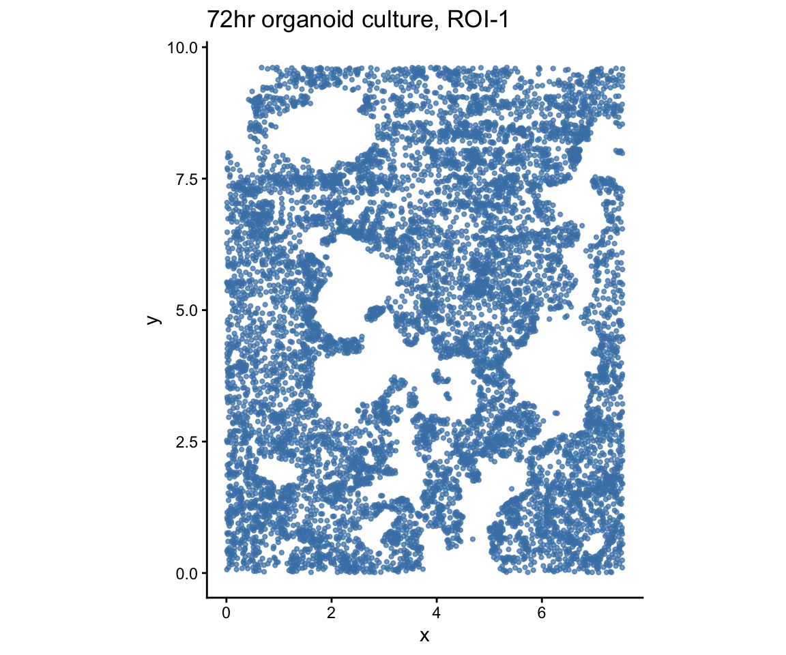
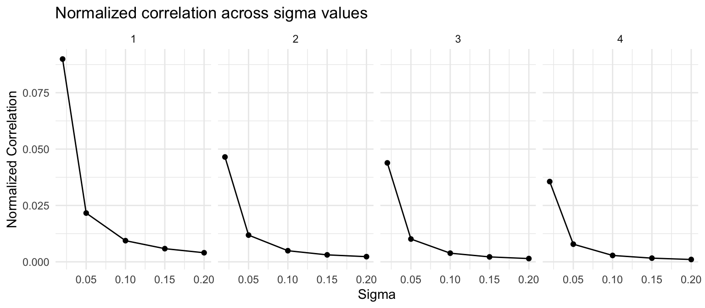
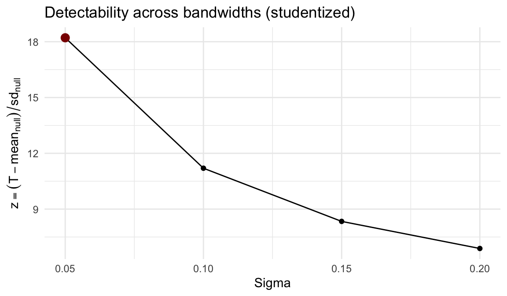
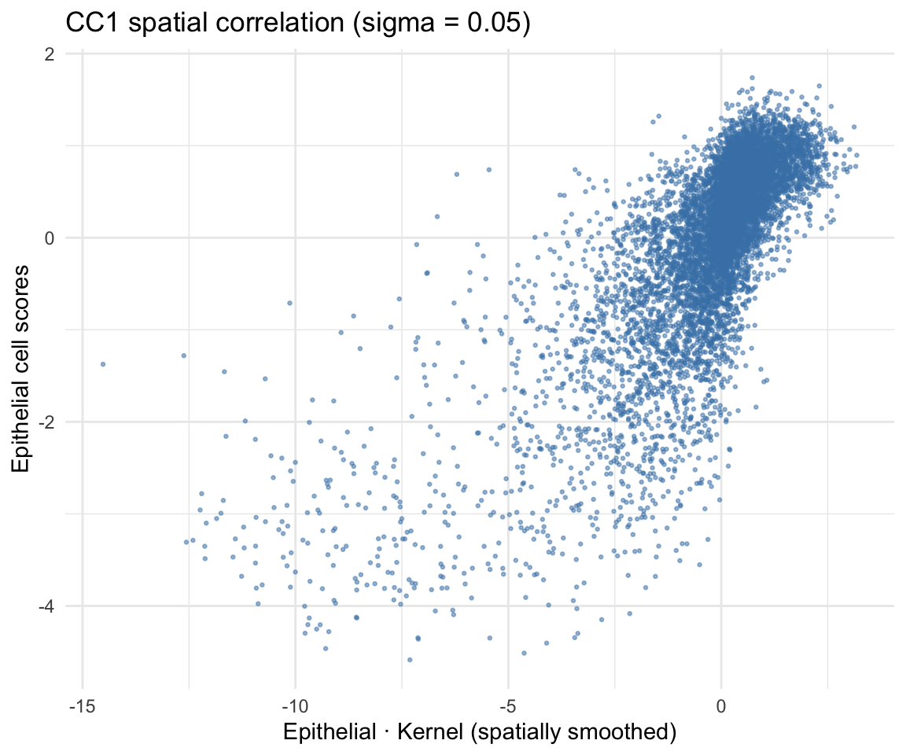
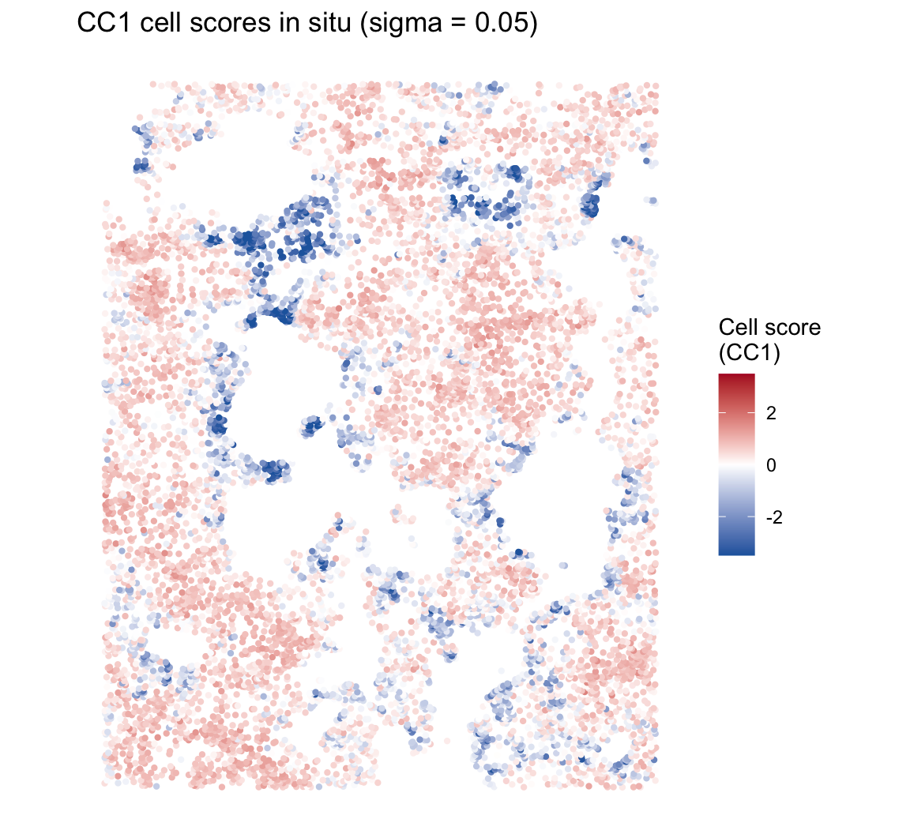
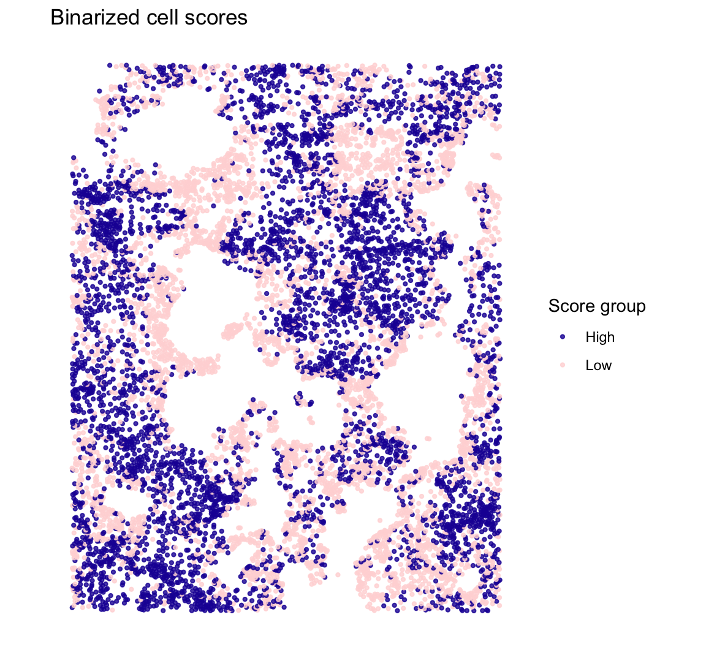
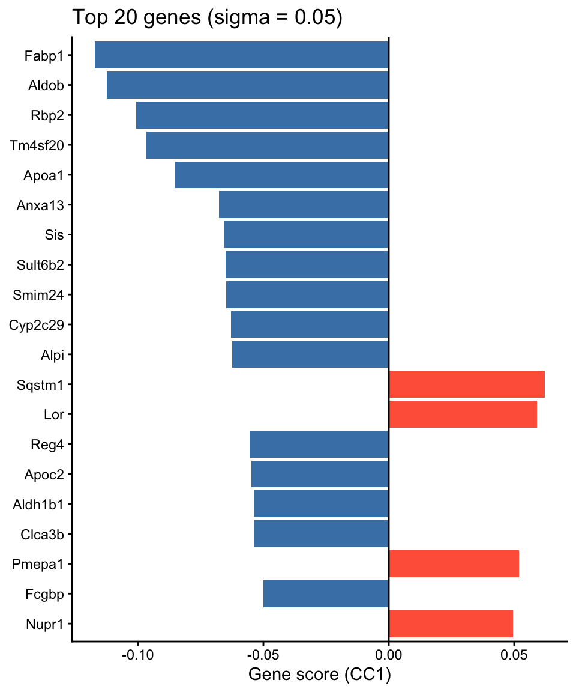

Within-cell-type spatial patterns (Organoid)
2026-08-06
Source:vignettes/organoid_one_type.Rmd
organoid_one_type.RmdOverview
This vignette demonstrates how CoPro detects within-cell-type spatial patterns using a single cell type. We analyze a 72-hour intestinal organoid culture imaged by seqFISH, where all cells are epithelial. CoPro identifies spatially organized gene programs—self-organization patterns that emerge within a single population.
What CoPro finds here: The spatial co-progression of epithelial cells captures the crypt–villus axis of the organoid—cells along the same developmental trajectory cluster spatially.
Download and load data
data_path <- copro_download_data("organoid")
dat <- readRDS(data_path)
cat("Cells:", nrow(dat$normalizedData), "\n")## Cells: 9140## Genes: 140The dataset contains:
-
normalizedData: expression matrix (cells x genes), capped at 95th percentile, DESeq2 size-factor normalized, log1p-transformed -
locationData: spatial coordinates (pixels / 5000) -
metaData: cell attributes -
cellTypes: all cells labeled as “Epithelial”
Visualize tissue layout
plot_df <- data.frame(
x = dat$locationData$x,
y = dat$locationData$y
)
ggplot(plot_df, aes(x = x, y = y)) +
geom_point(color = "steelblue", size = 0.8, alpha = 0.7) +
coord_fixed() +
ggtitle("72hr organoid culture, ROI-1") +
xlab("x") + ylab("y") +
theme_classic()
Create CoPro object
obj <- newCoProSingle(
normalizedData = dat$normalizedData,
locationData = dat$locationData,
metaData = dat$metaData,
cellTypes = dat$cellTypes
)
obj <- subsetData(obj, cellTypesOfInterest = "Epithelial")Run the CoPro pipeline
# PCA
obj <- computePCA(obj, nPCA = 15, center = TRUE, scale. = TRUE)
# Spatial distance (no normalization for this dataset)
obj <- computeDistance(obj, distType = "Euclidean2D",
normalizeDistance = FALSE)
# Test multiple sigma values
sigma_choice <- c(0.01, 0.02, 0.05, 0.1, 0.15, 0.2)
obj <- computeKernelMatrix(obj, sigmaValues = sigma_choice,
upperQuantile = 0.85,
normalizeKernel = FALSE,
lowerLimit = 5e-7)## Warning in .computeSparseKernelFloat32Core(object, sigmaValues, lowerLimit, :
## Float32 kernel Epithelial -> Epithelial at sigma=0.01 is too sparse (16048
## represented entries).
# Sparse kernel CCA
obj <- runSkrCCA(obj, scalePCs = TRUE, maxIter = 500, nCC = 4)
# Normalized correlation and scores
obj <- computeNormalizedCorrelation(obj, tol = 1e-3)## Warning: The whitening operator R has an all-zero diagonal (a stored
## self-kernel). A correlation operator has R_ii = 1; with a zero diagonal
## trace(R) = 0, so R has negative eigenvalues, R^(1/2) does not exist, and the
## whitened-Frobenius denominator is not a norm. The zero diagonal is correct in
## the numerator's kernel and wrong here. Use normalizer = "variogram", or
## "kernel", which restores the unit diagonal.
obj <- computeGeneAndCellScores(obj)Select the bandwidth
The normalized correlation varies with sigma, and
obj@sigmaValueChoice records where it is largest:
ncorr <- getNormCorr(obj)
ggplot(ncorr, aes(x = sigmaValues, y = normalizedCorrelation)) +
geom_point() +
geom_line() +
facet_wrap(~ CC_index, nrow = 1) +
xlab("Sigma") +
ylab("Normalized Correlation") +
ggtitle("Normalized correlation across sigma values") +
theme_minimal()
That curve is not a safe basis for choosing sigma, because the quantity it plots does not have the same meaning at every bandwidth. The normalized correlation divides the co-progression statistic by a norm of the kernel, and no available denominator holds the null level of that ratio constant across sigma: the shipped un-whitened norm ignores the cells’ own spatial autocorrelation and drifts one way, whitened variants need a within-type correlation operator that the data do not pin down. Comparing the curve across sigma therefore compares numbers with different floors, and its peak is pulled toward whichever bandwidth has the highest floor rather than the strongest signal.
This bites hardest in exactly the within-type setting of this vignette, where the natural whitening operator is the stored self-kernel — which carries a zero diagonal, so it is not a correlation operator and its square root does not exist.
selectSigmaByPermutation() measures the floor instead of
modelling it. At each bandwidth it compares the observed statistic to
its own permutation null, built by rigidly shifting the tissue against
itself (a wrap-around shift preserves the cells’ own spatial structure
while destroying the alignment being tested), and selects the bandwidth
maximizing the studentized statistic
z = (T - mean_null) / sd_null. Both the location and the
scale come from the null itself, which is what makes the values
comparable across the grid; within a single cell type the location term
is not decorative, because the convention that a cell is not its own
neighbour gives the null a sigma-dependent mean of its own. Because one
pass of draws evaluates every bandwidth, the same draws also give the
null distribution of max z, so the reported p-value already
accounts for having scanned the grid.
set.seed(1)
sel <- selectSigmaByPermutation(obj, nPermu = 199, maxCells = 2000,
verbose = FALSE)## Warning: Selected bandwidth 0.05 sits at the low end of the scanned grid, so
## the most detectable scale may lie outside it. Widen sigmaValues (see
## detectSigmaRange()) and re-run before reporting this bandwidth.
sel## CoPro bandwidth selection (studentized max-T permutation)
## selected sigma : 0.05
## max-T p-value : 0.005 (B = 199, floor 0.005, greater)
## z at optimum : 18.213
## plateau : 0.05, 0.10, 0.15, 0.20 (pAdjusted <= 0.05)
## sigma cellType1 cellType2 statistic nullMean nullSD z
## 1 0.05 Epithelial Epithelial 1547.508 3.199195 84.79253 18.212795
## 2 0.10 Epithelial Epithelial 4239.725 22.182222 376.63623 11.197921
## 3 0.15 Epithelial Epithelial 7128.151 57.428122 847.91764 8.338926
## 4 0.20 Epithelial Epithelial 10151.631 111.748307 1458.74715 6.882538
## pAdjusted
## 1 0.005
## 2 0.005
## 3 0.005
## 4 0.005
ggplot(sel$perSigma, aes(x = sigma, y = z)) +
geom_line() +
geom_point() +
geom_point(data = subset(sel$perSigma, sigma == sel$sigmaValueChoice),
color = "darkred", size = 3) +
xlab("Sigma") +
ylab(expression(z == (T - mean[null]) / sd[null])) +
ggtitle("Detectability across bandwidths (studentized)") +
theme_minimal()
sigma_opt <- sel$sigmaValueChoice
cat("Permutation-selected sigma:", sigma_opt, "\n")## Permutation-selected sigma: 0.05
cat("Largest-normalized-correlation sigma:", obj@sigmaValueChoice, "\n")## Largest-normalized-correlation sigma: 0.02Two things in that output are worth reading carefully.
The scan does not cover the whole grid. Candidates below the median
nearest-neighbour spacing are dropped by default
(minSigma = "spacing"), because a Gaussian kernel narrower
than one cell spacing has almost no mass off the diagonal: the statistic
rests on a handful of pairs and the null understates its own floor, so
z climbs as sigma shrinks and the argmax simply rails at
whichever tiny bandwidth is on offer. Pass minSigma = NULL
to see that behaviour.
The warning is doing its job. z decreases monotonically
across every retained bandwidth, so the selected value sits at the low
end of the grid — the scan found the edge, not an interior optimum. The
selected 0.05 is about 1.3 cell spacings, which is a plausible scale for
this tissue and matches what this fixed-direction statistic returns on
other datasets, but the grid here is a hardcoded one, and a bandwidth
chosen at a boundary should be widened and re-run before it is reported.
detectSigmaRange() builds a grid from the data instead of
by hand.
Finally, z is typically flat-topped, so sigma is only
weakly identified: read sel$plateau as the band of scales
at which co-progression is detectable and treat the selected value as a
representative point inside it, checking that the gene programs below
are stable across the band rather than tied to one number.
Correlation plot
For a within-type model, the objective is to find cell scores that are spatially correlated: cells close in space (as measured by the kernel) should have similar scores. The kernel-smoothed scores (K * scores) vs raw cell scores should show a positive correlation:
df_corr <- getCorrOneType(obj,
sigmaValueChoice = sigma_opt,
cellTypeA = "Epithelial",
ccIndex = 1
)
ggplot(df_corr) +
geom_point(aes(x = AK, y = B), size = 0.5, alpha = 0.5,
color = "steelblue") +
xlab("Epithelial · Kernel (spatially smoothed)") +
ylab("Epithelial cell scores") +
ggtitle(paste0("CC1 spatial correlation (sigma = ", sigma_opt, ")")) +
theme_minimal()
Cell scores in situ
Continuous scores
cs <- getCellScoresInSitu(obj, sigmaValueChoice = sigma_opt)
# Clamp color scale for contrast
q99 <- quantile(abs(cs$cellScores), 0.99)
ggplot(cs) +
geom_point(aes(x = x, y = y, color = cellScores), size = 0.8) +
scale_color_gradient2(low = "#2166ac", mid = "white", high = "#b2182b",
midpoint = 0,
limits = c(-q99, q99),
oob = scales::squish,
name = "Cell score\n(CC1)") +
coord_fixed() +
ggtitle(paste0("CC1 cell scores in situ (sigma = ", sigma_opt, ")")) +
theme_classic() +
theme(axis.line = element_blank(), axis.text = element_blank(),
axis.ticks = element_blank(), axis.title = element_blank())
Binarized scores
Binarizing at the median highlights the two spatial groups—high vs low scoring cells, revealing the organoid’s spatial compartments:
cs$group <- ifelse(cs$cellScores > median(cs$cellScores), "High", "Low")
ggplot(cs) +
geom_point(aes(x = x, y = y, color = group), size = 0.8, alpha = 0.8) +
scale_color_manual(values = c("High" = "#1e17a4", "Low" = "#ffd8d8"),
name = "Score group") +
coord_fixed() +
ggtitle("Binarized cell scores") +
theme_classic() +
theme(axis.line = element_blank(), axis.text = element_blank(),
axis.ticks = element_blank(), axis.title = element_blank())
The spatial pattern reveals the self-organization of the organoid epithelium—cells are continuously ordered along a spatial gradient that reflects their position within the organoid structure.
Top genes associated with spatial progression
Gene scores reflect how strongly each gene contributes to the spatial co-progression axis:
key <- paste0("geneScores|sigma", sigma_opt, "|Epithelial")
gs <- obj@geneScores[[key]][, 1]
top_idx <- head(order(abs(gs), decreasing = TRUE), 20)
top_df <- data.frame(
gene = factor(names(gs)[top_idx],
levels = rev(names(gs)[top_idx])),
score = gs[top_idx]
)
top_df$direction <- ifelse(top_df$score > 0, "positive", "negative")
ggplot(top_df, aes(x = gene, y = score, fill = direction)) +
geom_col() +
coord_flip() +
scale_fill_manual(values = c("positive" = "tomato",
"negative" = "steelblue"),
guide = "none") +
geom_hline(yintercept = 0, linewidth = 0.5) +
labs(x = NULL, y = "Gene score (CC1)") +
ggtitle(paste0("Top 20 genes (sigma = ", sigma_opt, ")")) +
theme_classic()
Data citation
Organoid data from: Heyman Y, Erez M, Burnham P, Nitzan M, Raj A. Self-Organization Through Local Cell-Cell Communication Drives Intestinal Epithelial Zonation. bioRxiv 2025.11.14.688372; doi: 10.1101/2025.11.14.688372
Session info
## R version 4.5.2 (2025-10-31)
## Platform: aarch64-apple-darwin20
## Running under: macOS Tahoe 26.1
##
## Matrix products: default
## BLAS: /System/Library/Frameworks/Accelerate.framework/Versions/A/Frameworks/vecLib.framework/Versions/A/libBLAS.dylib
## LAPACK: /Library/Frameworks/R.framework/Versions/4.5-arm64/Resources/lib/libRlapack.dylib; LAPACK version 3.12.1
##
## locale:
## [1] en_US.UTF-8/en_US.UTF-8/en_US.UTF-8/C/en_US.UTF-8/en_US.UTF-8
##
## time zone: America/Los_Angeles
## tzcode source: internal
##
## attached base packages:
## [1] stats graphics grDevices utils datasets methods base
##
## other attached packages:
## [1] ggplot2_4.0.2 CoPro_1.3.0 testthat_3.3.2
##
## loaded via a namespace (and not attached):
## [1] generics_0.1.4 lattice_0.22-9 magrittr_2.0.5 evaluate_1.0.5
## [5] grid_4.5.2 RColorBrewer_1.1-3 pkgload_1.5.1 fastmap_1.2.0
## [9] maps_3.4.3 rprojroot_2.1.1 Matrix_1.7-5 pkgbuild_1.4.8
## [13] sessioninfo_1.2.3 brio_1.1.5 purrr_1.2.1 spam_2.11-3
## [17] viridisLite_0.4.3 scales_1.4.0 cli_3.6.5 rlang_1.2.0
## [21] ellipsis_0.3.3 withr_3.0.2 cachem_1.1.0 devtools_2.5.0
## [25] otel_0.2.0 tools_4.5.2 parallel_4.5.2 memoise_2.0.1
## [29] dplyr_1.2.1 vctrs_0.7.2 R6_2.6.1 matrixStats_1.5.0
## [33] lifecycle_1.0.5 fs_2.0.1 usethis_3.2.1 irlba_2.3.7
## [37] pkgconfig_2.0.3 desc_1.4.3 pillar_1.11.1 gtable_0.3.6
## [41] glue_1.8.0 Rcpp_1.1.1 fields_17.1 xfun_0.57
## [45] tibble_3.3.1 tidyselect_1.2.1 rstudioapi_0.18.0 knitr_1.51
## [49] farver_2.1.2 labeling_0.4.3 dotCall64_1.2 compiler_4.5.2
## [53] S7_0.2.1